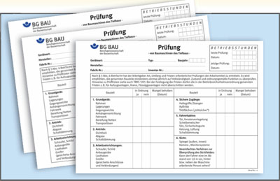
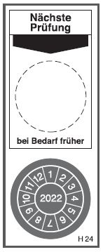

Prüfungen von Arbeitsmitteln |

Bediener
Zur Prüfung befähigte Person
Prüfsachverständige
Bediener
Zur Prüfung befähigte Person
Prüfsachverständiger
| Prüfgegenstände | Prüfende Person vor erster Inbetriebnahme, bei Änderungen | Prüfende Person für die jährliche Prüfung |
| Anschlagmittel | Zur Prüfung befähigte Person | Zur Prüfung befähigte Person |
| Erdbaumaschinen | Zur Prüfung befähigte Person | Zur Prüfung befähigte Person |
| Rammen, Bohrgeräte | Zur Prüfung befähigte Person | Zur Prüfung befähigte Person |
| Tief- und Straßenbaumaschinen | Zur Prüfung befähigte Person | Zur Prüfung befähigte Person |
| Turmdrehkrane | Prüfsachverständiger | Zur Prüfung befähigte Person, alle 4 Jahre Prüfsachverständiger anschließend im 14. und 16. Betriebsjahr, dann jährlich. |
| LKW-Ladekrane | Nicht erforderlich | Zur Prüfung befähigte Person, LKW Ladekrane mit mehr als 300 kNm Lastmoment oder mit mehr als 15 m Auslegerlänge alle 4 Jahre, Prüfsachverständiger anschließend ab 13. Betriebsjahr jährlich |
| Gabelstapler | Zur Prüfung befähigte Person | Zur Prüfung befähigte Person |
| Hebebühnen | Prüfsachverständiger | Zur Prüfung befähigte Person |
| Elektrische Anlagen und Betriebsmittel | Elektrofachkraft | Elektrofachkraft in bestimmten Zeitabständen |
| Bauaufzüge | Zur Prüfung befähigte Person | Zur Prüfung befähigte Person |
| Schwimmende Geräte | Zur Prüfung befähigte Person | Zur Prüfung befähigte Person |
| Kreissägen (Holzbearbeitung) | Zur Prüfung befähigte Person | Zur Prüfung befähigte Person |
| Handmaschinen | Zur Prüfung befähigte Person | Elektrofachkraft in bestimmten Zeitabständen |
| Flüssiggasanlagen auf Maschinen und Geräten des Bauwesens | Nicht erforderlich | Zur Prüfung befähigte Person |

07/2021